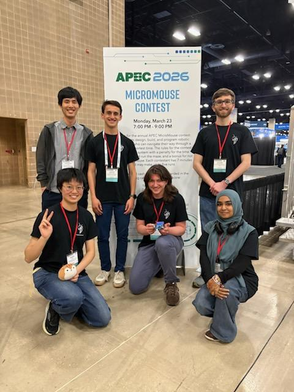

Career Goals
What my plans are for the future and what I'm excited about
Where I'm going
I'm drawn to optimization, simulation, controls, embedded systems, and graphics. After undergrad, I plan to pursue graduate school — I'm not sure yet whether that means an MS or a PhD, but I want to go deeper into the areas I've been exploring through my projects. Further out, I'm interested in both teaching and eventually starting my own company. I'm still figuring out how those fit together.
What I'm doing now
I'm applying to research labs for Fall 2026, with a focus on computational physics and simulation. I'm also searching for a summer robotics or controls internship, and am currently targeting a position at ONExia. Within GT, I'm involved in RoboJackets and continuing work on projects like Micromouse.
What's next
Over the next few years, I want to:
- Land a research position for Fall 2026 in computational physics or a related area
- Get a robotics/controls internship for Summer 2027
- Take courses that connect to my interests — PHYS 3266 (Computational Physics), ECE 4560 (Automation and Robotics), and MATH 4541 (Dynamics and Bifurcations)
- Take on a leadership role within RoboJackets by Spring 2027
- Apply to graduate programs by Fall 2028
